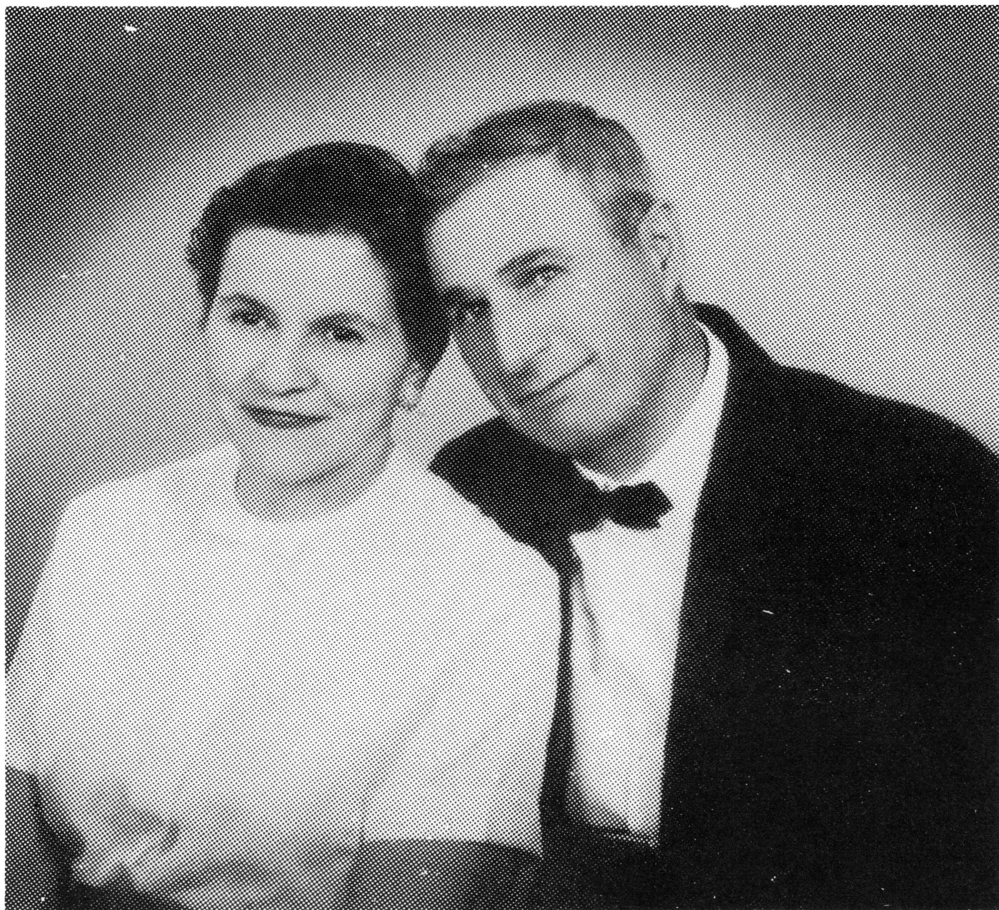

ANTOINE L'HEUREUX
Antoine, "Tony", as he was known by all, was born on March 13, 1903 near Delmas, Saskatchewan (then known as the Northwest Territories). He was the 18th and youngest living son of Moise and Sophie L'Heureux. When Tony was three, the family moved back to their homestead in Jackfish.
As Tony would reminisce about his childhood, he was never in need of food, clothing or love. The family was very close and spouses would be welcomed with open arms and hearts, being made feel that they had lived in the family since birth.

Government officials often stopped over at Grandpa Moise's and, because Dad was the youngest child, he would often be spoiled. Dad loved to retell of the time that Senator Prince had come by to visit. By chance, he asked Dad what he would really like to own. Dad didn't hesitate when he answered "Red Shoes". On the Senator's next visit, he brought along a very special surprise, much to Dad's delight. It was his much-longed for pair of red shoes!
The big brown sugar barrel was a source of great temptation for all the children, and Dad was no exception. He and his brothers would scoop it out and place it on the snow. Later, when the sugar had melted and formed a sticky "taffy", they would return and eat it.
With Dad's love of the ranch life and the great outdoors, it wasn't long before he teamed up with his brothers, one of them being Wilfrid, on the rodeo Circuit. He became known as the "Jackfish Kid", and could be seen from time to time, replacing his brothers, in the event if they were a little hung over from the previous night's activities! In between Rodeo's, he helped Grandpa Moise in the operation of the ranch.
In 1924 or so, he met and began to court Delima Nolin. They were married on October 1st, 1925. They lived on the ranch with Grandma and Grandpa for a few years. Mom saw such a bond of love amongst the family members that she hadn't seen amidst other families. When Onil was born, he was spoiled rotten by his Grandparents. perhaps that being the first baby of Grandma's last baby had something to do with it. A few years later, they moved to Meota.
In 1940, Dad joined the Canadian Armed Forces. Because he had bad feet, he was not allowed to go overseas. Instead, he was stationed in the Cadet Bases as a cook. This arrangement was fairly suitable as whenever he had a leave of absence, he could return home and see his growing family. Just before he came out of the forces in 1945, we moved to Delmas. By then, there were five children. In 1947, Dad bought land near there, and that is where his youngest son, Lionel, was born and raised. Lionel still lives on that land today.
The farm provided them with the necessities of life and Dad continued to love his horses. He attended rodeos but no longer participated. Mom and Dad loved to attend dances, and played cards often.
In August of 1975, Mom and Dad, and their eldest son, Onil and his wife, Dorthy, co-celebrated 50 years Golden and 25 years Silver Wedding Anniversaries. The celebration was held at the Howard Kenny Hall in Battleford, Sask.
Dad sold the farm to Lionel in 1976 and moved into Delmas where they retired and enjoyed life. They had a cabin at Poplar Cove on Jackfish Lake, and during the summer months, would enjoy fishing and the many visits from relatives and friends.
Dad was a good, kind hearted man, and even though he had a simple life, he enjoyed it to the fullest. He never complained, even during this last few days on earth.
Now that he is no longer with us, he was and is sadly missed by his wife, children, as well as his numerous friends. He was a tough man and he fought every battle using tooth and nail.
ANTOINETTE BEAUDOIN
Antoine L'Heureux
| NAME | BORN | MARRIED | SPOUSE | BOY | GIRL | DIED |
|---|---|---|---|---|---|---|
| Antoine | Apr. 13, 1903 | Oct. 1, 1925 | Delima Nolin | 3 | 3 | Aug. 16, 1983 |
| ANTOINE'S FAMILY | ||||||
| Onil | June 14, 1926 | Mar. 20, 1950 | Dorothy Grist | 0 | 2 | |
| Flore | Jan. , 1931 | Sept. , 1933 | ||||
| Aime | Nov. 8, 1936 | Oct. 13, 1958 | Eveline Lalonde | 1 | 1 | |
| Georgette | May 16, 1937 | Dec. 26, 1957 | Leo Labrecque | 2 | 3 | |
| Antoinette | Jan. 27, 1942 | July 3, 1970 | Lloyd Beaudoin | 0 | 2 | |
| Lionel | Mar. 22, 1947 | May 31, 1969 | Marsha Molter | 1 | 0 | |
| Antoine's Grandchildren | ||||||
| ONIL'S FAMILY | ||||||
| Jeannette | Jan. 19, 1952 | June 8, 1973 | Gordon Blanchard | 3 | 0 | |
| Debra | Mar. 30, 1955 | July 11, 1975 | David Halsall | 0 | 0 | |
| Remarried | Dec. 29, 1983 | Wayne Murphy | ||||
| Antoine's Great Grandchildren | ||||||
| Onil's Grandchildren | ||||||
| JEANNETTE'S FAMILY | ||||||
| Nicholas | Feb. 10, 1981 | |||||
| Jacob | Sept. 22, 1982 | |||||
| Adam | Apr. 28, 1985 | |||||
| Antoine's Grandchildren | ||||||
| AIME'S FAMILY | ||||||
| Antoine (adpt) | Aug. 13, 1967 | |||||
| Nicole (adpt) | Sept. 22, 1970 | |||||
| GEORGETTE'S FAMILY | ||||||
| Camil | Oct. 19, 1958 | Dec. 6, 1981 | Shannon Grondin | 2 | 0 | |
| Rosemarie | Nov. 11, 1959 | |||||
| Raymond | July 15, 1961 | |||||
| Suzanne | Dec. 5, 1963 | May 21, 1982 | Warren Hill | 1 | 2 | |
| Lisa | Nov. 23, 1968 | |||||
| Antoine's Great Grandchildren | ||||||
| Georgette's Grandchildren | ||||||
| CAMIL'S FAMILY | ||||||
| Justin | Feb. 19, 1981 | |||||
| Randall | Apr. 30, 1982 | |||||
| SUZANNE'S FAMILY | ||||||
| Yvonne | July 20, 1981 | |||||
| Christopher | Nov. 11, 1982 | |||||
| Angela | Feb. 5, 1985 | |||||
| Antoine's Grandchildren | ||||||
| ANTOINETTE'S FAMILY | ||||||
| Rita | Jan. 26, 1968 | |||||
| Gisele | May 27, 1971 | |||||
| LIONEL'S FAMILY | ||||||
| Marc | Nov. 20, 1969 | |||||
| TOTAL DESCENDANTS | 38 |
| LIVING | 36 |
| DECEASED | 2 |